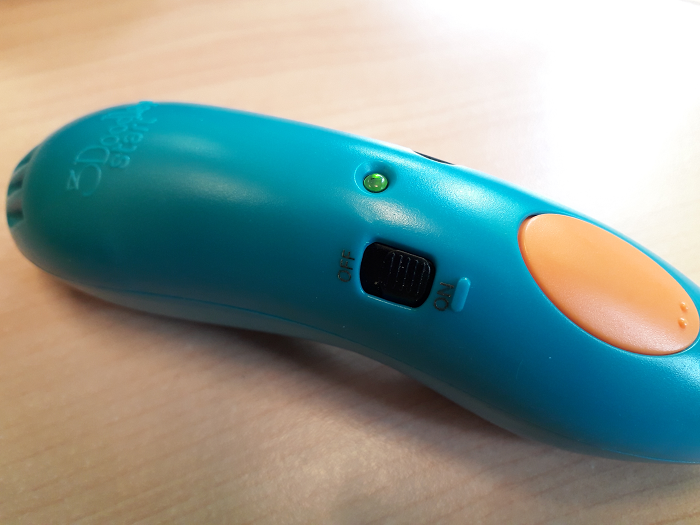

_____Stylo 3D: 3Doodler Start¶
Fonction¶
Le 3Doodler est un stylo faisant fondre du plastique. Il est possible avec de dessiner des formes à plat et en 3 dimensions.
Matériel¶

Logiciels¶
Aucun logiciel n’est requis.
Utilisation¶
Préparation du matériel¶
Rechargez le 3Doodler en le branchant par USB à un ordinateur ou à la prise d’un chargeur de smartphone.
Note
La diode clignote en orange pendant la recharge et reste allumée en orange une fois chargée.
Il faut compter environ 2h à 2h 30 pour recharger le 3Doodler Start.
Important
Il faut anticiper la recharge avant les ateliers.
Pour l’utiliser, débranchez le 3Doodler et mettez l’interrupteur sur On. La diode sera allumée en rouge pendant la chauffe. Une fois à température la lumière sera verte.
Le stylo prêt:
Insérez le filament spécialement conçu pour le 3Doodler (en forme de petites pailles).
Attention
Le stylo ne fonctionne pas avec le filament d’imprimantes 3D, car la température du 3Doodler n’est pas assez élevée pour le faire fondre.
Le plastique se consomme très rapidement et est onéreux. Réfléchissez d’abord à votre création avant de la commencer.
Il sera important de donner l’appareil qu’après avoir expliqué son fonctionnement, de surveiller son utilisation et de distribuer soit même le filament.
Créez avec le stylo¶
Appuyez une fois sur le bouton orange pour pousser le plastique et une autre fois pour l’arrêter.
Extrusion du plastique: .. image:: extrusion.png
Appuyez deux fois pour retirer le plastique. Appuyez deux fois pour retirer le plastique.
Conseils¶
pour les formes en volume, réaliser plutôt le patron à plat puis plier et renforcer les bords pour créer du volume.
pour créer votre forme directement en volume tracez votre création lentement, il faut compter environ 35 secondes pour que le plastique devienne solide.
Maintenance¶
si le plastique n’est pas extrudé (ne sors pas par l’embout du stylo), vous pouvez le pousser au début avec une tige métallique.

si le plastique est difficile à retirer, il vous faudra peut être secouer le stylo pour le faire tomber.